; two such bases are connected by a unitary
; two such bases are connected by a unitary Theorem
Let on a finite-dimensional  (the infinite case is in the spectral theorem) (von Neumann 1932).
(the infinite case is in the spectral theorem) (von Neumann 1932).
- Its eigenvalues are real.
- Eigenkets of distinct eigenvalues are orthogonal.
- The normalised eigenkets can be chosen to form an orthonormal basis and
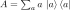
.
Proof
From and the adjoint of
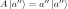
, namely , sandwich: With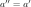
and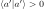
: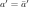
, eigenvalues are real. With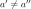
: . For completeness: the eigenspace of one eigenvalue is invariant, and so is
of one eigenvalue is invariant, and so is 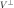
(if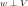
,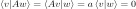
); induction on dimension on gives a basis.Change of basis
If
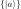
and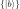
are two orthonormal bases,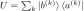
is unitary,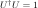
. Matrix elements transform as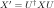
. Trace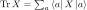
and the eigenvalues are invariant, since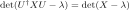
.Worked example
Diagonalise
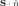
for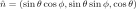
: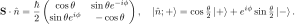
 for every direction: the trace is 0 and the determinant
for every direction: the trace is 0 and the determinant 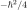
.Engineering applications
Every measurable quantity of a device — qubit energy, spin, photon number, polarisation — is modelled by a Hermitian matrix; numerically, finding allowed energies of a quantum well or of a waveguide mode is an eigenvalue problem for a Hermitian matrix.
Pitfall
"Hermitian" in finite dimension is enough; in infinite dimension (position, momentum) one needs self-adjoint with the right domain, otherwise eigenvalues may be complex or the decomposition may fail.